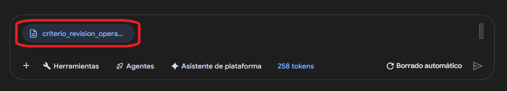

Gemini con documentos
En esta etapa utilizaremos Gemini para leer un PDF almacenado en Cloud Storage y convertir su contenido a texto plano sin resumir ni interpretar. Esa copia textual será la entrada documental que después leerá el agente.
1. Trabajar con documentos no es lo mismo que trabajar con tablas
Un PDF es una fuente documental no estructurada. Puede contener títulos, listas, párrafos, tablas o incluso páginas escaneadas. Antes de pedir conclusiones, necesitamos comprobar si el contenido fue incorporado y si puede leerse con suficiente fidelidad.
2. Comprueba la legibilidad
No todos los PDF son equivalentes. Un PDF con texto seleccionable suele ser más fácil de procesar que un documento compuesto principalmente por imágenes o páginas escaneadas.
PDF con texto legible
El modelo puede acceder al contenido textual y conservar títulos, cifras y listas con mayor facilidad.
PDF escaneado o complejo
Puede necesitar capacidades adicionales de análisis/OCR y siempre requiere revisar con mayor cuidado el resultado.
3. Importar el PDF desde Cloud Storage
En el entorno de Google Cloud utilizado en este curso comprobamos que el chat de Gemini permite usar la opción Importar desde Cloud Storage. Así evitamos descargar el PDF al computador solo para volver a adjuntarlo.
- Abre el espacio de chat de Gemini utilizado en el curso.
- Inicia un chat nuevo.
- Abre el selector para añadir/importar una fuente.
- Selecciona Cloud Storage.
- Localiza el PDF de la Prueba Tipo.
- Confirma que el documento quedó incorporado a la conversación.
- Recién entonces ejecuta el prompt de conversión.



4. Qué significa convertir PDF → texto plano
En esta actividad convertir no significa resumir. Queremos una representación textual fiel del documento para que otro componente pueda leerla de forma directa.
| Sí queremos | No queremos |
|---|---|
| Conservar títulos y subtítulos. | Reescribir el documento con “mejor estilo”. |
| Conservar cifras y condiciones. | Redondear, simplificar o reinterpretar cifras. |
| Conservar listas y aclaraciones. | Eliminar detalles por considerarlos poco importantes. |
| Marcar contenido ilegible. | Inventar lo que probablemente decía. |
| Obtener solo texto. | Agregar introducciones o comentarios del modelo. |
5. Prompt validado para PDF → TXT
Este es el prompt que utilizamos y validamos para la Prueba Tipo. En la evaluación se debe copiar sin reformularlo innecesariamente.
El PDF adjunto es la fuente documental oficial de una evaluación. Convierte fielmente su contenido a texto plano para que posteriormente pueda ser procesado por otro agente. Debes cumplir estas reglas: - No resumas. - No interpretes. - No agregues información. - No elimines condiciones, cifras, títulos ni aclaraciones. - No reformules el significado de ninguna condición. - Conserva el código del documento, títulos, subtítulos, listas numeradas, cifras y expresiones relevantes. - Conserva expresiones como “criterio de revisión”, “revisión adicional” y cualquier limitación expresada en el documento. - Si alguna parte no puede leerse con certeza, escribe `[CONTENIDO NO LEGIBLE]` en lugar de inferirla. Devuelve únicamente el texto resultante, sin introducción, explicación, comentarios adicionales ni bloques Markdown. Ese contenido será guardado posteriormente con el nombre `criterio_revision.txt`. Antes de finalizar, verifica que el texto represente fielmente el PDF original y que ninguna condición haya sido alterada.

6. Qué deberías observar en el resultado
La respuesta debe contener solamente la representación textual del documento. En nuestro PDF de práctica deberían conservarse, entre otros elementos, el código del documento y las cuatro condiciones simultáneas del criterio.
7. Guardar el resultado como criterio_revision.txt
En el entorno que probamos, Gemini mostró el texto resultante en el chat, pero no produjo automáticamente un archivo TXT descargable ni lo escribió de regreso en Cloud Storage. Por eso este tramo es manual.
- Copia únicamente el texto resultante.
- Guárdalo localmente como criterio_revision.txt.
- Abre tu espacio personal en Cloud Storage.
- Entra a la carpeta insumos/.
- Sube criterio_revision.txt.
- Verifica que el archivo quedó en la ruta correcta.


8. ¿Por qué convertir el PDF si Gemini ya puede leerlo?
Porque intervienen herramientas distintas. El chat de Gemini puede interpretar el PDF directamente en esta práctica, pero la herramienta de lectura de Cloud Storage utilizada por nuestro agente trabaja de forma más directa y predecible con contenido textual.
PDF original
Se conserva como la fuente documental oficial y permite volver a verificar el contenido.
TXT derivado
Es una representación textual fiel preparada como entrada para el agente.
9. Errores frecuentes
| Problema | Qué hacer |
|---|---|
| Se importó el PDF equivocado. | Retíralo del flujo y selecciona la ruta oficial antes de ejecutar el prompt. |
| Gemini agregó una introducción. | No la copies al TXT; revisa además que haya respetado el resto de las reglas. |
| El resultado resumió condiciones. | Vuelve al prompt validado y comprueba fidelidad contra el PDF. |
| Una parte no es legible. | Debe aparecer [CONTENIDO NO LEGIBLE], no una inferencia. |
| El TXT quedó en otra carpeta. | Muévelo o vuelve a subirlo a alumno-XX/insumos/. |
| Se esperaba que Gemini escribiera en Storage. | En el flujo validado, esa escritura es manual: guardar TXT y luego subirlo. |
10. Lugar exacto dentro de la Prueba Tipo
Este módulo cubre los pasos documentales centrales de la evaluación:
- Google Cloud — Preparar datos: documentos no estructurados desde Cloud Storage
- Google Cloud — Agent Search: formatos de documentos e importación desde Cloud Storage
La documentación oficial confirma que los productos Gemini/Agent de Google Cloud trabajan con documentos no estructurados, incluidos PDF, y admiten Cloud Storage como origen. La ruta exacta “Importar desde Cloud Storage → PDF → respuesta de texto” descrita arriba fue además comprobada directamente en la interfaz utilizada durante este curso. La interfaz puede evolucionar, por lo que se prioriza el flujo funcional sobre memorizar la posición exacta de un botón.